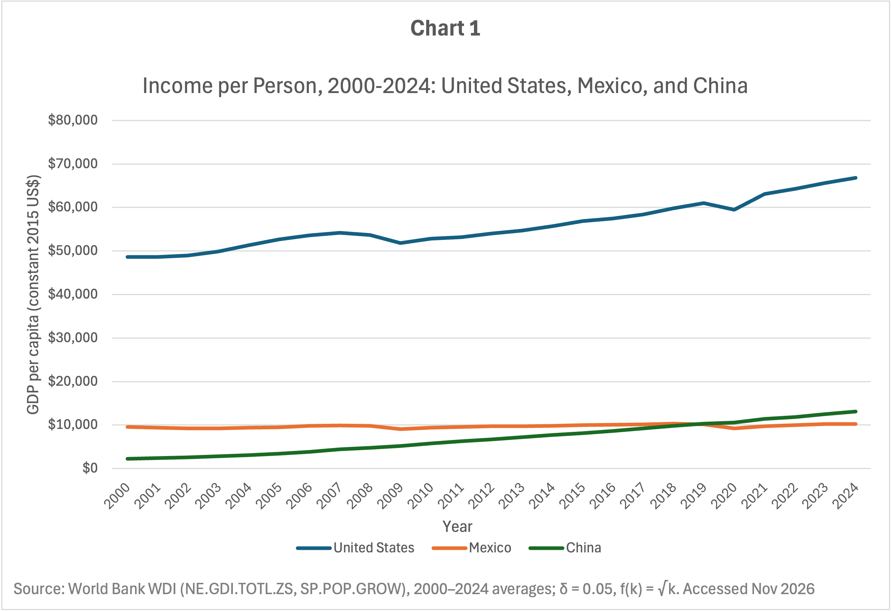
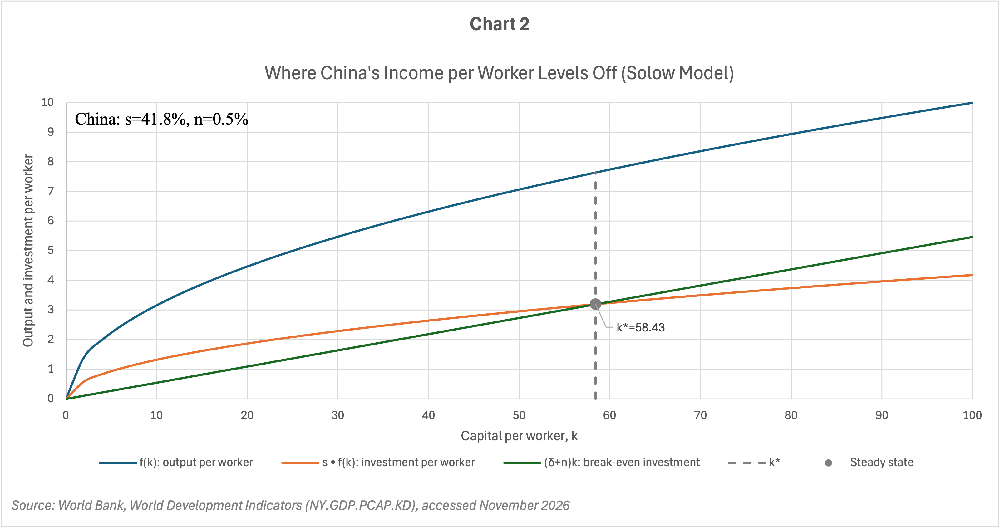
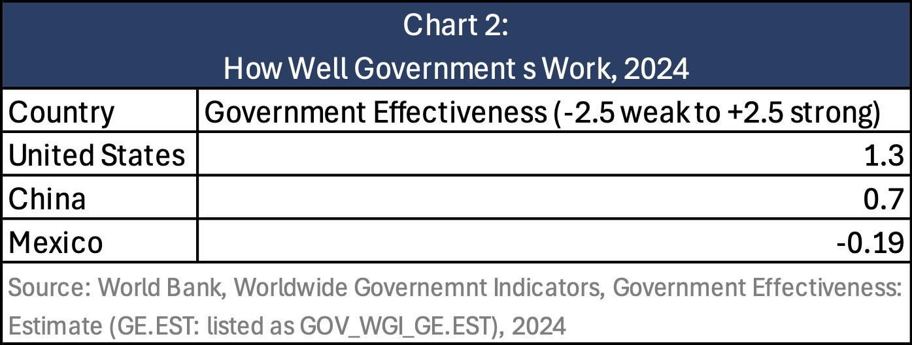

ECON 305: Intermediate Macroeconomic Theory, Old Dominion University, Fall 2026
Rayna Chiavario

From 2000 to 2024 China’s income per person rose greatly, from $2,237 to $13,119, passing Mexico around 2019; Mexico’s income per person only grew from $9,582 to $10,284. The United States grew slower than China at ~38%, however, it still earns ~5 times more per person in 2024 at $66,857. China has closed the gap quickly, but it still has a large gap to close.

Savings allow countries to invest in factories, equipment, and infrastructure which makes workers more productive and increases output. However, each additional investment adds less than the one before so eventually savings are used to replace depreciating capital which limits growth. Population growth matters because a larger workforce means capital must be spread across more workers. China saves about 42% of its income, about twice the United States rate, and its population grows more slowly, 0.5% vs 0.8%, so the Solow model suggests China should keep closing the income gap. The fact that China remains far behind the United States suggests other factors, such as technology, human capital, and institutions also play a role.

When a government has an effective role within the economy, such as building roads, schools, enforcing contracts, and carrying out policy reliably, it lets businesses invest and use capital productively. On this measure, in 2024 the United States scores 1.30, China 0.70, and Mexico -0.19, which follows the same order as their incomes per person. China’s score rose from -0.57 in 2002 while Mexico’s fell. China’s remaining gap with the United States suggests better institutions, not just more saving.
China could improve its institutions by creating government agencies more professional and the policies more predictable, such as hiring and promoting officials based on performance and applying regulations consistently. This could raise it GE score which could give businesses confidence in their investments and contracts being protected, creating less reliance on saving for economic growth. The cost is that officials would lose some control over the economy and reforms take years to pay off along with resistance from those who benefit from the current system.
Sources: World Bank, World Development Indicators: GDP per capita (NY.GDP.PCAP.KD), gross capital formation (NE.GDI.TOTL.ZS), population growth (SP.POP.GROW). World Bank, Worldwide Governance Indicators: Government Effectiveness (GE.EST / GOV_WGI_GE.EST).